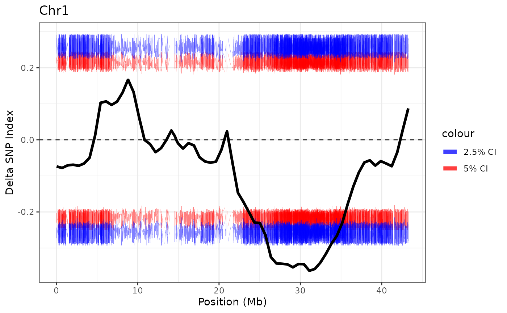

Basic Usage
This data is derived from: Mapping of Quantitative Trait Loci Underlying Cold Tolerance in Rice Seedlings via High-Throughput Sequencing of Pooled Extremes. Yang Z, Huang D, Tang W, Zheng Y, Liang K, et al. (2013) PLOS ONE 8(7): e68433. https://doi.org/10.1371/journal.pone.0068433
Raw reads were downloaded from the NCBI Short Read Archive, aligned to the v7 Nipponbare genome and SNPs were called as described in the GATK Best Practices.
NOTE: This data was downloaded from here, and subset to
Chr1. Additionally, 7 rows with multi-allelic loci were
removed, as were loci where the DP (total depth) was 0 in either the low
or high bulk. The columns MULTI-ALLELIC = 'false',
TYPE = 'snp' and QUAL = 20e3 were added. These
columns are required for the QTLseqr 2.0, see
?makeBSAExperimentFromGatkTable. We now recommend using the
nf-core/sarek pipeline for variant
calling, which is compliant with the GATK best practices.
Retrieve paths to the data
gatk_table_file <- system.file("extdata",
"Yang_et_al_2013_chr1.table.gz",
package = "QTLseqr",
mustWork = TRUE)
coldata_file <- system.file("extdata",
"Yang_et_al_2013_coldata.csv.gz",
package = "QTLseqr",
mustWork = TRUE)Construct the BSAExperiment object
bsae = makeBSAExperimentFromGatkTable(
gatk_table_path = gatk_table_file,
col_data_path = coldata_file,
metadata = list(
population_1_n = 25,
population_2_n = 25,
population_structure = "F2"))
comparisons(bsae) <- S4Vectors::DataFrame(population_1 = 'SRR834927',
population_2 = 'SRR834931')Filter
# create filters at the variant level
ref_freq = rowSums(refDepth(bsae), na.rm = TRUE) / rowSums(totalDepth(bsae), na.rm = TRUE)
ref_freq_mask = 0.2 <= ref_freq & ref_freq <= 0.8
depth_mask = rowSums(totalDepth(bsae), na.rm = TRUE) > 100 & rowSums(totalDepth(bsae), na.rm = TRUE) < 400
# add the variant level filter to the BSAExperiment object
variantFilter(bsae) <- ref_freq_mask & depth_mask
# Create a filter at the variant AND sample level and add this to the object
# Note that samples can also be masked with `sampleFilter()`
matrixFilter(bsae) <- assay(bsae, "GQ") >= 99 & assay(bsae, "DP") > 40
# Once the filter vectors and matrix are added to the object, apply the filters
# to create a filtered dataset
filtered_bsae = applyFilter(bsae)
#> There is no explicit filter column in the colData. Returning TRUE for all samples.Generate results
bsae_results = createBSAResults(filtered_bsae, window_size=1e6)
rowRanges(bsae_results) %>%
as_tibble() %>%
bind_cols(as_tibble(assay(bsae_results, 1))) %>%
mutate(start = start/1e6) %>%
ggplot() +
geom_hline(yintercept = 0, linetype='dashed', alpha = 0.8) +
geom_line(aes(start, CI_05, color = '5% CI'), alpha = 0.5, linewidth = 0.1) +
geom_line(aes(start, CI_95, color = '5% CI'), alpha = 0.5, linewidth = 0.1) +
geom_line(aes(start, CI_025, color = '2.5% CI'), alpha = 0.5, linewidth = 0.1) +
geom_line(aes(start, CI_975, color = '2.5% CI'), alpha = 0.5, linewidth = 0.1) +
scale_color_manual(values = c('5% CI' = 'red', '2.5% CI' = 'blue')) +
geom_line(aes(start, delta_snp_index_smoothed), linewidth=1.3) +
theme_bw() +
ggtitle("Chr1") +
labs(x = "Position (Mb)", y = "Delta SNP Index") +
guides(color = guide_legend(override.aes = list(linewidth = 2))) 